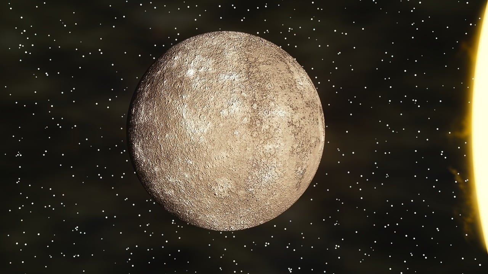

Mercúrio é o planeta mais próximo do Sol. É um planeta rochoso, destituído de satélites e atmosfera rarefeita, sendo também o menor planeta do sistema solar. Por esse motivo apresenta temperaturas bastante elevadas de aproximadamente 400°C.
Por outro lado, a face do planeta não iluminada pelo sol pode atingir temperaturas de aproximadamente -170 °C. O movimento de rotação do planeta é de 59 dias, enquanto o de translação é de 87 dias.
Outras características de Mercúrio:
Diâmetro de Mercúrio: 4.879,4 Km; Gravidade de Mercúrio: 3,7 m/s2; Distância do Sol: 5,791 . 107; Pressão atmosférica: 10-15 bar; Inclinação do eixo: 0,01º; Duração do dia: 1408 horas (58 dias e 16 horas terrestres); Duração do ano: 87 dias terrestres.